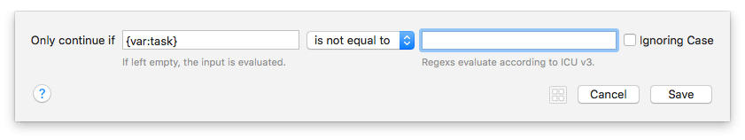
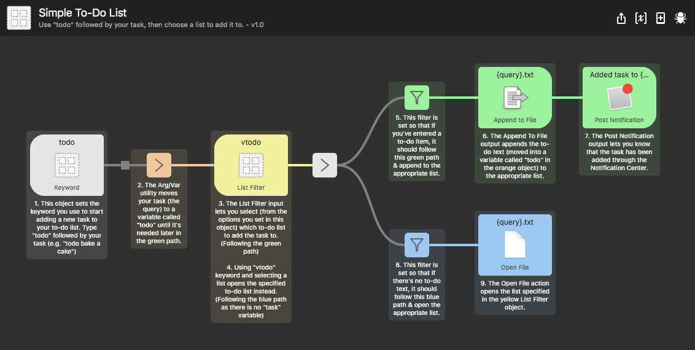

Filter Utility
This is a legacy object; We recommend using the Conditional Utility for filtering and branching workflow streams instead of the legacy Filter Utility.
The To-Do List example workflow available in Alfred 4 usees the Conditional Utility instead of the Filter, but the example below remains for your interest.
The Filter utility helps you control which stream your workflow should follow by matching certain rules, using equal to, not equal to and regex matching.
Using the Filter Utility
Add a Filter object to your workflow from the Utilities list, and connect it after any object for which you'd like to filter the output.
The simplest use for the Filter utility is by using the "equal to" and "not equal to" options in the dropdown menu, and including the text or variable you'd like to use as criteria.

In this example, I've set the filter to only allow this stream of the workflow to continue if it has content; In other words, if the input is not empty (the upper path in green).
I've then provided an alternative path where the stream can continue if it is empty (the lower path in blue).

Using Regex for Filtering
If your filtering needs are more advanced, you can also use regular expressions (regex) to match the input. Alfred conforms to ICU v3.
A useful site to create and check your regular expressions is http://regexr.com.
Workflow Example Using the Filter Utility
Want to see the filter utility in action? We've included a few workflows in the Getting Started guides and examples in Alfred, which you can find under the [+] button at the bottom of the Workflows sidebar in Alfred's preferences.
In particular, the example shown above is the Simple To-Do List workflow, which uses two Filter objects, allowing two different actions depending on whether the input is empty or not.